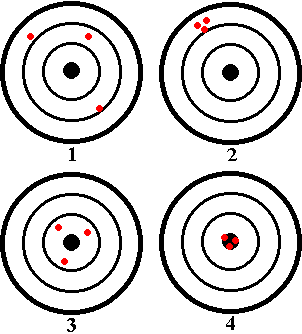

Let's take a closer look at the dartboards.
|  |
#1 -- Not Precise, Not Accurate This dart thrower needs some lessons -- the darts are nowhere near the centre of the board, and they're all over the place. #2 -- Precise, But Not Accurate #3 -- Not Precise, But Accurate #4 -- Precise And Accurate |
Next we'll formalize these distinctions and see how they apply to error analysis in general.